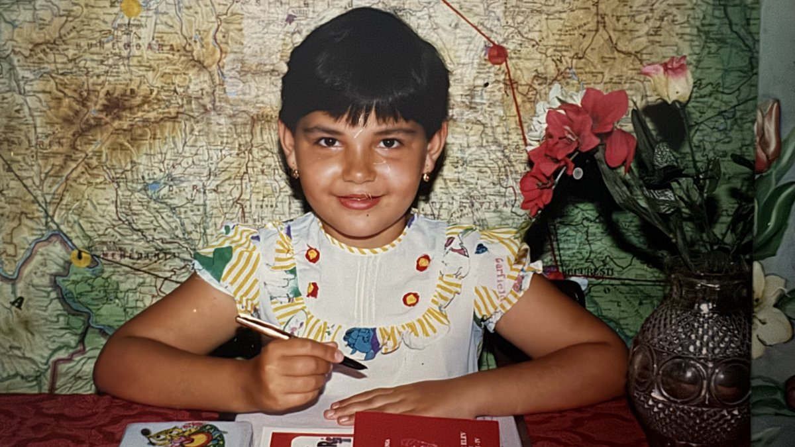

Capitolul 1
Fetița cu dungi de cărbune
De unde a început totul
M-am născut în 1989, în Vulcan, în Valea Jiului, într-o familie de mineri.
Când mă gândesc la copilărie, nu-mi amintesc doar lucrurile grele. Îmi amintesc Valea Jiului așa cum am trăit-o eu.
Îmi amintesc mineradele și cum mama se certa cu tata să nu plece la București. Îmi amintesc cum mergeam cu prietenii să ne scăldăm în Jiu și ieșeam din apă cu dungi negre de cărbune pe noi — practic, după baie eram mai murdari decât înainte. :))
Îmi amintesc dealurile pe care mă ducea bunica, pârâul în care mă jucam cu broaștele, măcrișul pe care îl mâncam direct de pe deal și merele pădurețe.
Părinții mei lucrau în minerit, dar asta nu însemna că aveam bani. Tata era alcoolic, iar eu am crescut într-o familie săracă. Mai târziu, tata a dispărut din viața noastră și, odată cu clasa a VI-a, pentru mine a început practic o altă viață.
Dar când mă uit în urmă, înțeleg ceva despre mama pe care probabil nu îl înțelegeam atunci.
Deși nu aveam bani, mă trimitea în excursii și tabere ori de câte ori putea. Voia să văd România așa cum și-ar fi dorit și ea să o vadă.
Am văzut barajul de la Drobeta-Turnu Severin, Cetatea Alba Carolina și multe alte locuri în care, ani mai târziu, m-am întors cu propriii mei copii.
Cred că acolo a început curiozitatea mea pentru lume.
Primul meu contact cu tehnologia
Îmi amintesc eclipsa de soare și bucata de sticlă afumată prin care încercam să o vedem. Îmi amintesc cât de fericită eram când aveam părul făcut în codițe și la televizor cântau fetele de la A.S.I.A.
Și undeva prin perioada aceea mama auzise că „informatica este de viitor”.
Nu știu exact cine i-a spus sau de unde a auzit. Dar a luat ideea foarte în serios.
Așa că, încă din școala generală, m-a trimis la cursuri de calculatoare.
Una dintre primele mele amintiri legate de un computer este că încercam să colorez o căsuță în Paint.
Primul meu calculator acasă l-am avut abia pe la 14 ani.
Și trebuie să recunosc ceva: nu am devenit copilul acela care desfăcea calculatorul să vadă ce este înăuntru și nici nu eram interesată să învăț cum se instalează Windows.
Eu voiam să folosesc tehnologia.
M-am acomodat foarte repede cu mIRC, Yahoo! Messenger, Media Player și, bineînțeles, favoritul meu dintotdeauna: Need for Speed.
Mă fascinau mașinile, filmele noi, muzica și tot ce venea din afara României. Voiam să știu ce se întâmplă în UK și SUA, ce muzică apăruse și ce făceau celebritățile despre care citeam.
Chiar și engleza am început să o învăț prin muzică.
Aveam un caiet în care scriam versurile pieselor de top exact așa cum credeam eu că le aud în engleză. Nu vreau să știu ce engleză inventasem în caietul acela. :))
Colecționam revista Cool Girl, iar pereții camerei mele erau plini de postere pe care, evident, le îndrăgeam foarte tare.
Tehnologia nu era pentru mine un subiect de studiu.
Era o fereastră către o lume mult mai mare decât cea în care crescusem.
Informatica — și facultatea pe care n-am ales-o din pasiune
La școală învățam bine, iar matematica era una dintre materiile la care mă descurcam cel mai bine. Așa am ajuns să aleg un liceu cu profil de informatică și am avut norocul să intru la unul dintre cele mai bune licee din zonă.
Și chiar și astăzi mă bucur când văd copii care își încep drumul acolo.
Dar, ironic, după liceul de informatică, visul meu nu era să studiez Computer Science.
Eu voiam Psihologie, la Cluj.
Eram tânără. În mintea mea exista facultatea din Cluj, dar nu prea existau întrebările practice: unde voi locui, din ce voi trăi, ce voi mânca?
Mama și mătușa mea gândeau ceva mai realist decât mine.
M-au convins să rămân în Valea Jiului și, pentru că terminasem liceul și luasem note bune la Bacalaureat, aveam șansa să primesc bursă la facultatea locală.
Și, aparent, free money bought me. :))
Am depus două dosare.
Unul la Facultatea de Mine, la o specializare legată de ecologizarea și închiderea minelor, și unul la Servicii Sociale.
Am ales Facultatea de Mine.
Nu pentru că visam la minerit.
Pentru că primeam bursă.
Îmi amintesc că mi-a părut rău când mi-am retras dosarul de la Servicii Sociale.
Nu aveam de unde să știu atunci că viața are uneori un simț al umorului foarte bun.
Câțiva ani mai târziu aveam să mă întorc exact la acel domeniu, să învăț despre el și să lucrez în îngrijire și servicii sociale timp de aproximativ opt ani.
Iar informatica?
Pe aceea aveam să o las deoparte pentru mult timp.
Doar ca să mă întorc la ea, mulți ani mai târziu, într-o altă țară, cu copii, responsabilități și o viață complet diferită.
Și de data aceasta nu pentru că mama auzise că „informatica este de viitor”.
Ci pentru că eu, în sfârșit, știam de ce vreau să o învăț.